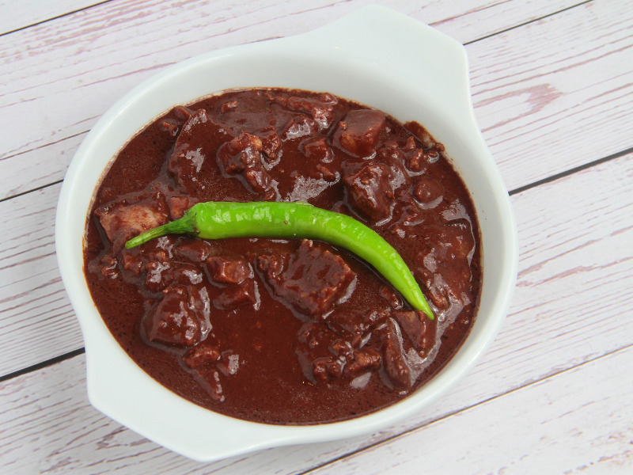

Dinuguan Recipe

Ingredients:
- 1 lb pork meat, cubed (preferably pork belly or shoulder)
- 1/2 lb pork blood (fresh or frozen)
- 2 tbsp cooking oil
- 1 medium onion, chopped
- 3 cloves garlic, minced
- 2-3 long green chili peppers, sliced
- 1/2 cup vinegar
- 1 cup water or broth
- 1 tbsp fish sauce
- 1/2 tsp black pepper
- Salt to taste
- 2 bay leaves
- 1/2 tsp sugar (optional, for balancing the flavors)
Instructions:
- Heat oil in a large pan over medium heat. Sauté garlic and onions until softened and fragrant.
- Add the pork meat and cook until browned.
- Pour in the vinegar and let it simmer for 2-3 minutes to cook off the strong vinegar smell.
- Add the water or broth, bay leaves, and fish sauce. Bring to a boil and simmer until the pork is tender (about 40 minutes).
- Once the pork is tender, add the pork blood to the pan. Stir until the blood is incorporated with the sauce, and simmer until the sauce thickens (about 10-15 minutes).
- Season with salt, pepper, and sugar (if using). Add the green chili peppers and cook for another 5 minutes.
- Once the sauce has thickened and the flavors have melded, remove from heat.
- Serve hot with steamed rice or puto (rice cakes). Enjoy!
Back to Menu